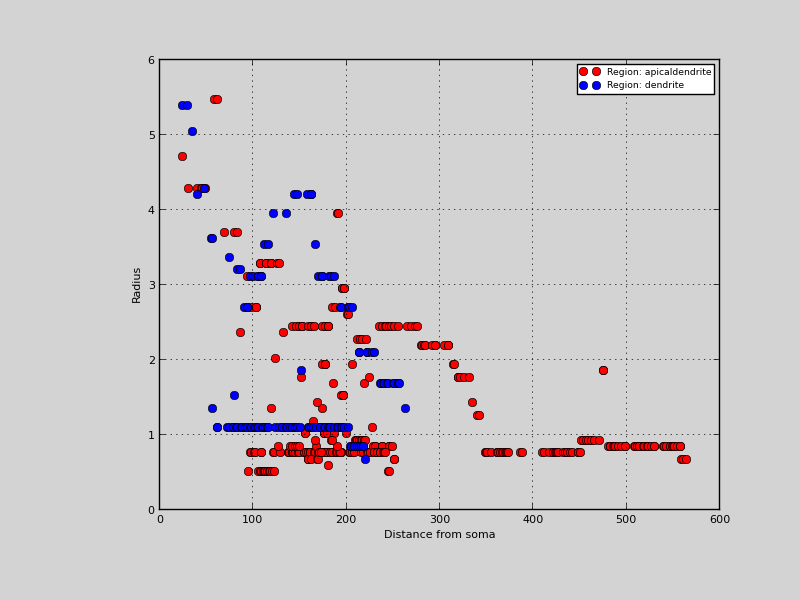

6. Simple morphology analysis
Simple morphology analysis
In this script, we load in an .swc which has 2 regions; “apicaldendrite” and “dendrite” declared in its .swc file, then look at its surface area, and how the radius of the region types becomes smaller as we move away from the soma.
Warning
I have not written tests for the surface area and volume functions, so don’t trust them yet! This is proof of concept code!
Code
import morphforge.stdimports as mf
import pylab
# Load a morphology from an SWC File, and look at the surface area and
# volume of the different section types
testSrcsPath = mf.LocMgr().get_test_srcs_path()
srcSWCFile = mf.Join(testSrcsPath, "swc_files/28o_spindle20aFI.CNG.swc")
morph = mf.MorphologyTree.fromSWC(src=open(srcSWCFile))
#Look at the regions that are used in this morphology:
for region in morph.get_regions():
#print region
print "Region: %s (%d)"%(region.name, 0)# len(region))
print " - Surface Area: ", sum([section.area for section in region]), "um2"
print " - Volume: ", sum([section.volume for section in region]), "um3"
# (Simple, but not the most efficient way to
# to this. For illustration purposes:)
def section_dist_to_dummy(sect):
if sect.is_dummy_section(): return 0.0
return section_dist_to_dummy(sect.parent) + sect.get_length()
f = pylab.figure()
ax1 = f.add_subplot("111")
ax1.set_xlabel("Distance from soma")
ax1.set_ylabel("Radius")
ax1.set_color_cycle(['red','blue'])
for region in morph.get_regions():
sections = list(region.sections)
dists = [section_dist_to_dummy(s) for s in sections]
radii = [s.d_r for s in sections]
ax1.plot(dists, radii, 'o', label="Region: %s" % region.name)
ax1.legend()
pylab.show()
Figures

Download Figure
{kind=link}
Output
No handlers could be found for logger "neurounits"
Openning ScriptFlags
/auto/homes/mh735/hw/NeuroUnits/ext_deps
Loading StdLib file: /auto/homes/mh735/hw/NeuroUnits/src/neurounits/../stdlib/stdlib.eqn
Region: apicaldendrite (0)
- Surface Area: 10869.4514114 um2
- Volume: 19139.1050591 um3
Region: dendrite (0)
- Surface Area: 7763.50517142 um2
- Volume: 18081.195643 um3
PlotMnager:Saving _output/figures/morphology060/{png,svg}/fig000_Autosave_figure_1.{png,svg}